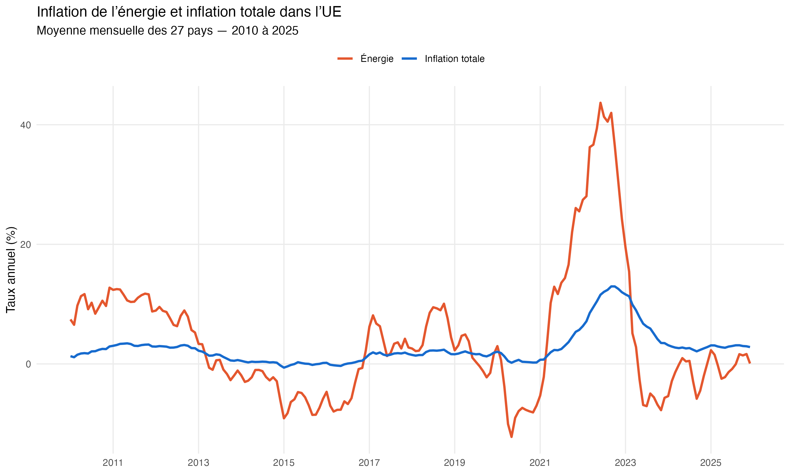
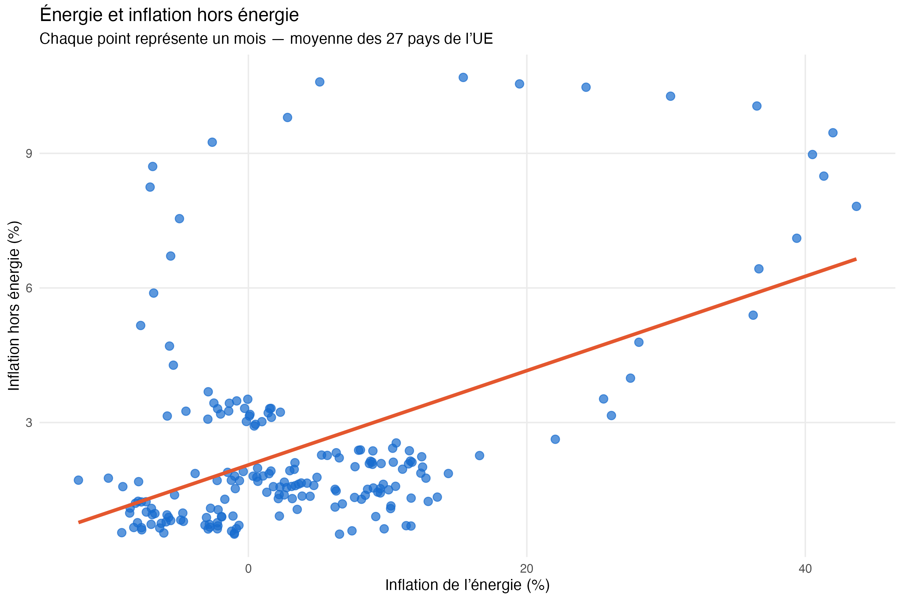
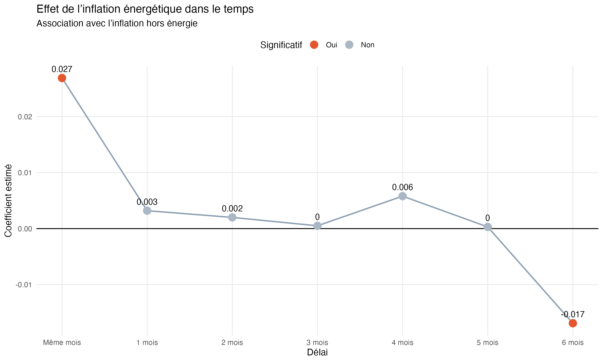

ÉCONOMÉTRIE · DONNÉES DE PANEL
Énergie et inflation
en Europe
Quand les prix de l’énergie augmentent, est-ce que les autres prix augmentent aussi ?
LA QUESTION
Quand l’énergie devient plus chère, est-ce que le reste suit ?
Une hausse des prix de l’énergie ne touche pas seulement directement les ménages. Elle peut aussi augmenter les coûts des entreprises : produire, transporter, chauffer ou stocker devient plus cher.
L’idée de ce projet est donc simple : regarder si les périodes de forte inflation énergétique sont également associées à une hausse des prix des autres biens et services.
Pour éviter une relation mécanique, l’analyse se concentre surtout sur l’inflation hors énergie.
QUE S’EST-IL PASSÉ ?
L’énergie réagit beaucoup plus fortement
Les prix de l’énergie connaissent des variations beaucoup plus brutales que l’inflation générale.
Le phénomène est particulièrement visible autour de 2021–2023 : l’inflation énergétique augmente très fortement avant de redescendre rapidement.
Première intuition : les deux inflations semblent souvent évoluer dans le même sens, mais pas avec la même intensité.

EST-CE QUE LES DEUX SONT LIÉES ?
Oui, elles ont tendance à augmenter ensemble
Chaque point du graphique représente un mois, calculé à partir de la moyenne des 27 pays de l’Union européenne.
La tendance est croissante : lorsque l’inflation de l’énergie est plus élevée, l’inflation hors énergie a elle aussi tendance à être plus élevée.
On observe donc une relation positive. Mais une relation ne signifie pas automatiquement que l’énergie est la cause de la hausse des autres prix.

EST-CE VRAIMENT L’ÉNERGIE QUI EXPLIQUE CE LIEN ?
Une partie du lien vient aussi d’autres facteurs
Au premier regard, le résultat est clair : quand l’inflation énergétique augmente de 1 point, l’inflation hors énergie est associée à une hausse d’environ +0,084 point.
Mais les pays européens ne sont pas identiques. Ils peuvent aussi subir les mêmes événements au même moment.
J’ai donc refait l’analyse en tenant compte des différences entre pays et des grands événements qui touchent plusieurs pays à une même période.
Le lien reste positif, mais il tombe à environ +0,030 point.
Cela signifie qu’une partie importante du lien observé au départ vient aussi de facteurs plus larges que l’énergie seule.
En clair : l’énergie est bien liée à l’évolution des autres prix, mais le lien devient beaucoup plus faible lorsque l’on tient compte de ce qui se passe autour. Une partie de la hausse des prix semble donc venir de facteurs plus larges que l’énergie seule.
EST-CE QUE L’EFFET DURE ?
Pas vraiment : le lien est surtout immédiat
J’ai ensuite regardé si une hausse de l’inflation énergétique pouvait encore être liée aux autres prix plusieurs mois plus tard.
Lorsque les différents retards sont étudiés ensemble, la relation positive apparaît surtout le même mois.
Entre 1 et 5 mois plus tard, les résultats ne sont plus statistiquement significatifs.
On ne trouve donc pas de transmission positive claire qui continuerait progressivement pendant plusieurs mois.

ALORS, EST-CE QUE L’ÉNERGIE CAUSE L’INFLATION ?
Le lien est clair, la causalité ne l’est pas
Ce que les données montrent : lorsque l’inflation énergétique est plus élevée, l’inflation hors énergie tend également à être plus élevée. Cette relation reste présente même lorsque l’on tient compte d’autres différences et événements.
Mais cela ne suffit pas pour dire que l’énergie cause directement l’inflation. D’autres facteurs peuvent faire augmenter en même temps les prix de l’énergie et les autres prix : tensions sur l’offre, situation internationale, coûts de transport ou autres chocs économiques.
Le résultat principal est donc simple : l’énergie est liée aux mouvements de l’inflation, mais elle n’en est pas l’unique explication.